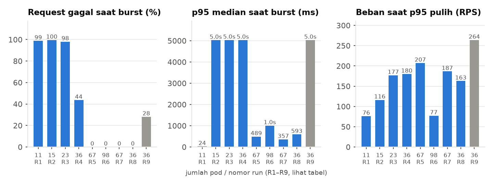
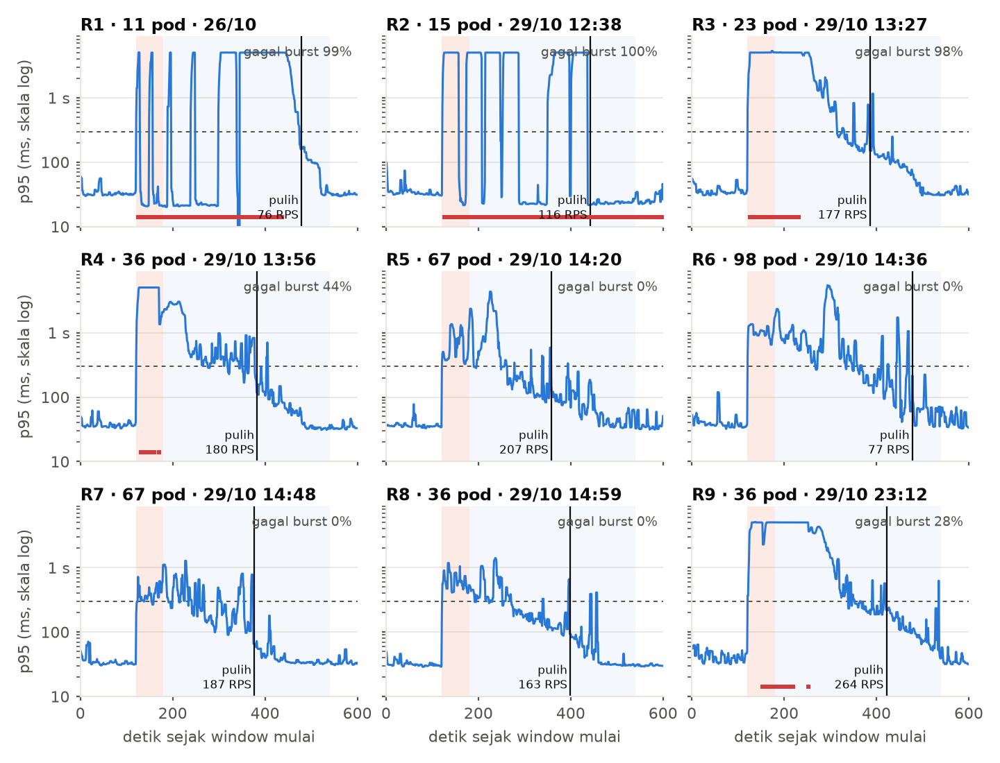
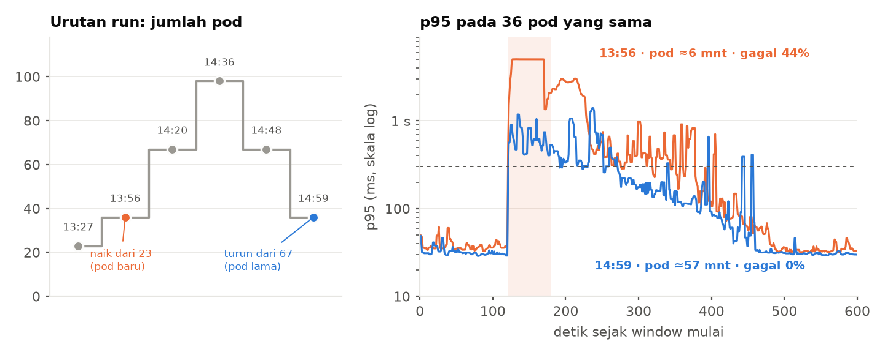

Tugas 1 — Cloud Experimental Environment
Sembilan run burst-flash-sale (26 dan 29 Oktober) dengan jumlah replica yang berbeda-beda. System under test: Online Boutique di kind (3 worker, host 12 core). Tanpa autoscaler.
Ringkasan.
Profil beban burst-flash-sale: 10 RPS selama 120 detik, lompat ke 400 RPS selama 60 detik, turun linier ke 10 RPS sampai detik 540, lalu 10 RPS lagi. Satu run (23:12) memakai 100 → 600 RPS dan diberi tanda * di tabel, jadi tidak dibandingkan langsung. Delapan run lain memakai profil yang sama. Yang berubah antar run hanya replica tiap service, diubah manual oleh peneliti.
| Run (jam UTC) | Pod | Frontend | Gagal saat burst | p95 median saat burst (ms) | Beban saat p95 pulih (RPS) | Umur frontend (menit) |
|---|---|---|---|---|---|---|
| R1 · 26/10 | 11 | 1 | 99% | 24 | 76 | 47 |
| R2 · 29/10 12:38 | 15 | 5 | 100% | 5025 | 116 | 18 |
| R3 · 29/10 13:27 | 23 | 3 | 98% | 5032 | 177 | 67 |
| R4 · 29/10 13:56 | 36 | 8 | 44% | 5029 | 180 | 6 |
| R5 · 29/10 14:20 | 67 | 16 | 0% | 489 | 207 | 17 |
| R6 · 29/10 14:36 | 98 | 24 | 0% | 1005 | 77 | 21 |
| R7 · 29/10 14:48 | 67 | 16 | 0% | 357 | 187 | 45 |
| R8 · 29/10 14:59 | 36 | 8 | 0% | 593 | 163 | 57 |
| R9 · 29/10 23:12 * | 36 | 8 | 28% | 5028 | 264 | 549 |
p95 dihitung di sisi generator beban per detik. “Saat burst” adalah detik 120–180. “Pulih” adalah detik pertama setelah 180 di mana median p95 10 detik di bawah 300 ms dan tetap begitu sampai akhir. “Umur frontend” adalah median umur pod frontend yang Ready pada awal burst. Sebagai pembanding, p95 pada 10 RPS ada di kisaran 30–37 ms.
Dari 11 sampai 67 pod, proporsi request gagal saat burst turun dari hampir seluruhnya ke nol. Tetapi begitu gagal nol, p95 tidak ikut rendah. Pada empat run tanpa gagal, p95 median saat burst berkisar 357–1005 ms, sekitar 10–30 kali kondisi normal. Menambah pod dari 67 ke 98 malah tidak memperbaiki apa pun: p95 median naik dari 489 ke 1005 ms dan pulih lebih lambat.

Gambar 1. Tiga ukuran per konfigurasi, urut menurut waktu run. Sumbu-x: jumlah pod dan nomor run (R1–R9 di tabel). Batang abu-abu adalah run dengan beban berbeda (100 → 600 RPS). p95 yang rendah pada run 26/10 bukan tanda sehat: 99% request gagal cepat.
Artinya jumlah pod hanyalah satu bagian dari kapasitas. Ada batas lain yang tidak berubah ketika pod ditambah. Sumber batas itu belum diketahui. Yang bisa disingkirkan dari data: CPU ingress-nginx hanya 0,3–0,4 core pada semua run, dan CPU total toko puncaknya 5,4 core dari 12 core host, jadi tidak ada bukti bahwa host atau ingress jenuh.
Gambar 2 menampilkan p95 sepanjang run. Pita oranye adalah puncak 400 RPS dan pita biru muda adalah penurunan. Kotak merah di dasar menandai detik di mana lebih dari separuh request gagal. Tanda itu penting: ketika request gagal cepat, p95 yang tercatat justru rendah (sekitar 20 ms), jadi p95 saja bisa menyesatkan.

Gambar 2. p95 per detik (median bergerak 5 detik, skala log), satu panel per run. Garis putus-putus: 300 ms. Garis hitam: titik pulih beserta bebannya saat itu.
Di semua run, p95 tidak mengikuti beban naik-turunnya. Pada run 26 Oktober (11 pod), p95 masih di kisaran 5 detik, yaitu batas timeout generator, ketika target sudah turun ke sekitar 140 RPS, dan baru normal di 76 RPS. Pada run terbaik pun, p95 baru pulih di 160–210 RPS. Padahal kondisi normal pada 10 RPS hanya 30 ms.
Ini pola antrean yang belum terkuras: request yang menumpuk saat puncak masih harus dilayani, dan selama itu request baru ikut menunggu. Perlu ditegaskan batas klaimnya: data ini hanya punya satu arah, yaitu beban turun. Untuk menyebutnya histeresis, kita perlu uji naik-turun yang bertahap (bagian 5, percobaan 1).
Run 13:56 dan 14:59 memakai replica yang identik di setiap service (frontend 8, currency 10, productcatalog 5, cart 4, ad 3, total 36 pod). Hasilnya: gagal 44% dengan p95 median 5029 ms, lawan gagal 0% dengan p95 median 593 ms.

Gambar 3. Kiri: urutan run dan jumlah pod. Run oranye datang setelah scale up dari 23 pod, run biru setelah scale down dari 67 pod. Kanan: p95 kedua run. Umur pod adalah median umur frontend yang Ready saat burst.
Yang berbeda adalah riwayatnya. Pada 13:56 pod frontend rata-rata berumur sekitar 6 menit (baru dinaikkan dari 23 pod), sedangkan pada 14:59 sekitar 57 menit (sisa dari 67 pod yang sudah dipakai di run sebelumnya). Dugaan yang masuk akal: pod baru yang sudah Ready belum hangat (runtime, cache, koneksi antar-service) sehingga belum bisa menerima beban penuh. Bukti ini baru satu pasangan run, jadi statusnya hipotesis, bukan kesimpulan. Run 14:20 (pod berumur sekitar 17 menit, tanpa gagal tetapi p95 tinggi) tidak bertentangan dengan dugaan itu, tetapi juga tidak membuktikannya.
Elastisitas cloud berjanji kapasitas bisa ditambah saat dibutuhkan. Data ini menunjukkan tiga jarak antara “pod sudah ada” dan “pod sudah melayani dengan sehat”. Pod yang Ready belum tentu hangat, pod tambahan tidak otomatis menurunkan latency, dan sesudah burst berlalu pengguna masih merasakan lambat. Operator membayar pod yang berjalan, jadi jarak ini adalah biaya tanpa manfaat.
Pertanyaan riset. Pada burst 3–4 kali beban normal, berapa lama kapasitas tambahan baru benar-benar melayani dengan p95 sehat (lead time dari burst mulai), komponen mana yang paling besar menyumbangnya, dan strategi infrastruktur apa yang paling banyak memotongnya sambil menjaga request tetap berhasil?
Komponen lead time yang bisa diukur terpisah: deteksi sinyal, keputusan scale, penjadwalan pod, penarikan image, startup, dan warm-up sampai p95 sehat.
| # | Percobaan | Yang dijawab |
|---|---|---|
| 1 | Beban naik bertahap lalu turun bertahap (10, 25, 50, 100, 150, 200 RPS, 60–90 detik per tahap) pada satu konfigurasi baseline. | Titik lutut (RPS di mana p95 melewati SLO) sebagai kapasitas baseline C. Perbandingan naik vs turun menentukan apakah ada histeresis. |
| 2 | Burst 3–4×C pada pod yang dingin (baru di-scale up) dan pada pod yang hangat, tanpa autoscaler. | Apakah pengaruh umur pod nyata, dan seberapa besar. Ini kontrol untuk percobaan berikutnya. |
| 3 | Burst yang sama dengan HPA berbasis CPU, berbasis RPS atau in-flight request (KEDA), pre-scale terjadwal, dan pre-scale ditambah warm-up. | Lead time tiap strategi, request gagal total, dan p95 puncak. Ini inti pertanyaan riset. |
| 4 | Opsional: load shedding atau rate limit di ingress selama puncak. | Apakah menolak sedikit request menjaga latency sisanya, dan memperpendek pemulihan. |
Percobaan 3 dan 4 memasang autoscaler dan mengubah ingress, sehingga di luar aturan baseline Tugas 1 (“jangan pasang autoscaler”). Untuk Tugas 1 cukup sampai rumusan masalah dan hipotesis.
combined.csv adalah rata-rata per pod, bukan total, karena fungsi agregasi di collector merata-ratakan seri. Angka CPU total di dokumen ini dihitung ulang dari file per-pod di folder metrics/. Metrik CPU_THROTTLED tidak mengembalikan data pada run ini, jadi throttling tidak bisa dinilai.kube_deployment_spec_replicas) pada window tiap run, karena metadata.json tidak mencatatnya.